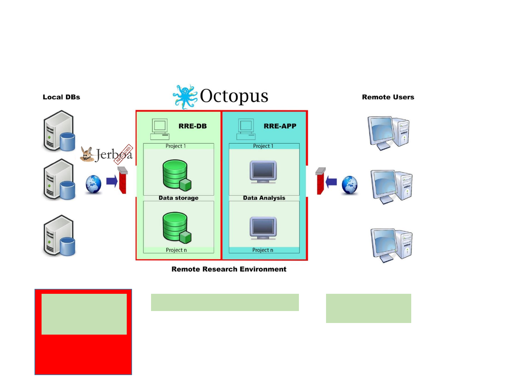
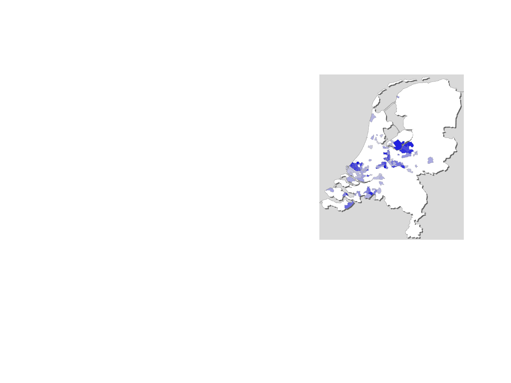

Data Network Panel
OHDSI Symposium
Peter R. Rijnbeek
Erasmus University Medical Center
Rotterdam, The Netherlands

Current infrastructure and tools
Study specific data
extraction and
transformation
Central Analytical Datasets Remote access for
study teams
OMOP CDM?
OHDSI Tools?
•Enables utilization of OHDSI Tools for feasibility assessment and studies
•Improves transparency in data extraction step
•Increases processing speed
Challenges
Convincing databases to participate
•What do I gain?
•What is lost in translation?
•What is the impact on my own workflow? For example, all the
studies we have done are on ATC codes not RX-norm.
•How much work is needed for a dataset update?
Large number of different coding systems in Europe
•Can we further improve the supportive tools?
•How to deal with OMOP vocabulary updates and local coding
changes?
Learning by doing: get hands-on experience using our
own IPCI database

Mapping the Integrated Primary Care Information
(IPCI) database
New coding schemes to tackle:
•ICPC codes for diagnosis and procedures
•WCIA-26 for measurements
•z-index for prescriptions
IPCI contains a lot of free text information. How to deal with this?
Currently replicating a study that evaluates the effectiveness of risk
minimization measures for pioglitazone.
IPCI
•Project started in 1989
•Data from 601 GPs in 475 practices
•1.900.000 patients
Recommendations for the OHDSI community
•Expansion to Europe strengthens the community
considerably but also introduces interesting
challenges.
•More replication studies are needed to study what is
lost in translation but also to show what you gain in
translation.
•Expansion of the methods library to more study
types, e.g., simple drug utilization, or more advanced
analytics.
•Installation of the OHDSI tools should be very easy to
enable unexperienced users -> work is ongoing.
•Showing the nice tools on real problems creates
interest. I would recommend the creation of a nice
instruction video to go viral
Happy to be part of the OHDSI
community and looking forward
to see more people and
databases join the fun!